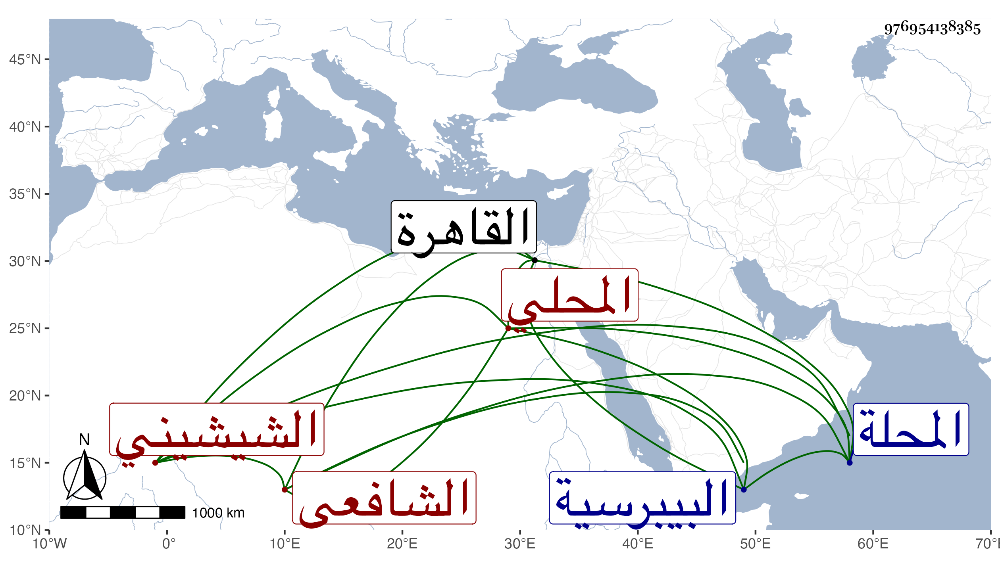

0902Sakhawi.DawLamic.ITO20230111-ara1.EIS1600.976954138385
Biography ID: 976954138385
687
محمد بن محمد بن محمد بن عمر بن وجيه عزيز الدين بن الجلال بن فتح الدين بن السراج الشيشيني المحلي الشافعي الماضي أبوه وجده والآتي ولده الجلال محمد . ولد سنة ست عشرة وثمانمائة ومات أبوه وهو صغير فكفله جده وحفظه القرآن والتنبيه وعرض على جماعة واشتغل على جده والشهاب العجيمي والعلم البلقيني وغيرهم ، وحج وناب في المحلة ثم استقل بها أشهرا في أيام المناوي واقتصر على النيابة بأماكن هناك إلى أن تركها لولده حين كف ، وذكر بمعرفة الصناعة مع فضيلة بالجملة واستمرار للتلاوة ولجزء من كتابه ، وقدم وهو كذلك القاهرة فنزل عند ابن عمه الشهاب الشيشيني فدام أشهرا ثم مات في سنة أربع وتسعين ودفن بحوش البيبرسية عند أقاربه رحمه الله .
